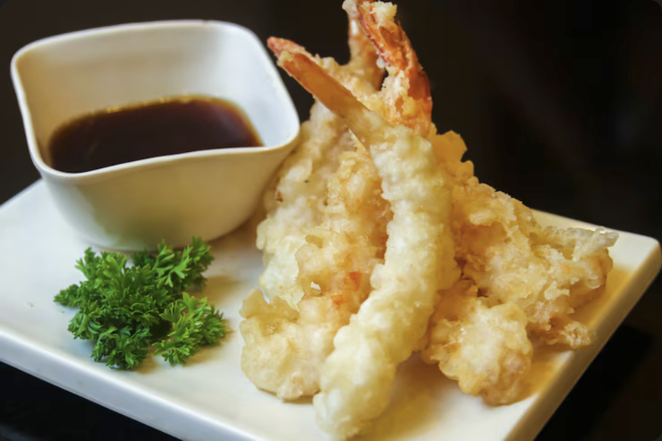

Shrimp Tempura Recipe

All you really need for this recipe are a few ingredients.
Ingredients:
- 2 egg whites
- 1 cup all purpose flour - sifted
- 2/3 cup of very cold or chilled water
- 1/4 cup cornstarch
Steps:
- Clean all the shrimps, and pat dry them.
- Heat oil in medium heat while you prepare the shrimps.
- Mix the ingredients together. Don't overmix, clumps are good!
- On a separate plate, mix some cornstarch and flour together.
- Dip the shrimps in the batter and then the dry flour and cornstarch mixture.
- Fry the shrimps until golden brown.
- Drain excess oil and serve with your favorite dipping sauce!
Back